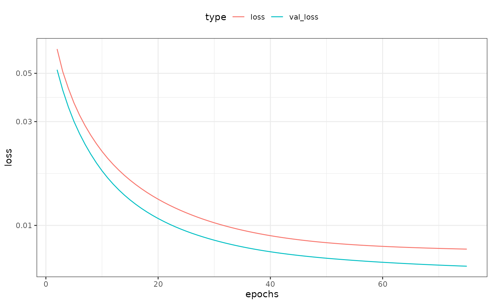

Entity Embeddings of Categorical Variables using TensorFlow
Source:vignettes/Applications/Tensorflow.Rmd
Tensorflow.RmdThe approach encodes categorical data as multiple numeric variables using a word embedding approach. Originally intended as a way to take a large number of word identifiers and represent them in a smaller dimension. Good references on this are Guo and Berkhahn (2016) and Chapter 6 of Francois and Allaire (2018).
The methodology first translates the C factor levels as a set of integer values then randomly allocates them to the new D numeric columns. These columns are optionally connected in a neural network to an intermediate layer of hidden units. Optionally, other predictors can be added to the network in the usual way (via the predictors argument) that also link to the hidden layer. This implementation uses a single layer with ReLu activations. Finally, an output layer is used with either linear activation (for numeric outcomes) or softmax (for classification).
To translate this model to a set of embeddings, the coefficients of the original embedding layer are used to represent the original factor levels.
As an example, we use the Ames housing data where the sale price of houses are being predicted. One predictor, neighborhood, has the most factor levels of the predictors.
library(tidymodels)
data(ames)
length(levels(ames$Neighborhood))## [1] 29The distribution of data in the neighborhood is not uniform:
ames %>%
count(Neighborhood) %>%
ggplot(aes(n, reorder(Neighborhood, n))) +
geom_col() +
labs(y = NULL) +
theme_bw()
Fo plotting later, we calculate the simple means per neighborhood:
means <-
ames %>%
group_by(Neighborhood) %>%
summarise(
mean = mean(log10(Sale_Price)),
n = length(Sale_Price),
lon = median(Longitude),
lat = median(Latitude)
)We’ll fit a model with 10 hidden units and 3 encoding columns:
library(embed)
tf_embed <-
recipe(Sale_Price ~ ., data = ames) %>%
step_log(Sale_Price, base = 10) %>%
# Add some other predictors that can be used by the network
# We preprocess them first
step_YeoJohnson(Lot_Area, Full_Bath, Gr_Liv_Area) %>%
step_range(Lot_Area, Full_Bath, Gr_Liv_Area) %>%
step_embed(
Neighborhood,
outcome = vars(Sale_Price),
predictors = vars(Lot_Area, Full_Bath, Gr_Liv_Area),
num_terms = 5,
hidden_units = 10,
options = embed_control(epochs = 75, validation_split = 0.2)
) %>%
prep(training = ames)## Warning: `terms_select()` was deprecated in recipes 0.1.17.
## Please use `recipes_eval_select()` instead.
theme_set(theme_bw() + theme(legend.position = "top"))
tf_embed$steps[[4]]$history %>%
filter(epochs > 1) %>%
ggplot(aes(x = epochs, y = loss, col = type)) +
geom_line() +
scale_y_log10() 
The embeddings are obtained using the tidy method:
hood_coef <-
tidy(tf_embed, number = 4) %>%
dplyr::select(-terms, -id) %>%
dplyr::rename(Neighborhood = level) %>%
# Make names smaller
rename_at(vars(contains("emb")),
funs(gsub("Neighborhood_", "", ., fixed = TRUE)))
hood_coef## # A tibble: 30 × 6
## embed_1 embed_2 embed_3 embed_4 embed_5 Neighborhood
## <dbl> <dbl> <dbl> <dbl> <dbl> <chr>
## 1 0.00849 0.0454 -0.0369 0.0157 0.00603 ..new
## 2 -0.0515 -0.0273 -0.0370 -0.0191 0.0367 North_Ames
## 3 0.0114 -0.0872 -0.00593 -0.0648 -0.0108 College_Creek
## 4 -0.0532 0.0703 -0.00590 -0.0352 0.0529 Old_Town
## 5 0.0280 -0.00582 -0.0139 -0.0310 0.0825 Edwards
## 6 -0.0205 -0.0912 -0.0300 -0.0572 -0.0753 Somerset
## 7 -0.00670 -0.153 0.0530 -0.0826 -0.0747 Northridge_Heights
## 8 -0.0504 -0.00753 0.00368 -0.0581 -0.0154 Gilbert
## 9 -0.0316 -0.0213 -0.0243 -0.0514 0.0454 Sawyer
## 10 -0.0373 0.00319 0.0112 -0.0133 -0.0200 Northwest_Ames
## # … with 20 more rows
hood_coef <-
hood_coef %>%
inner_join(means, by = "Neighborhood")
hood_coef## # A tibble: 28 × 10
## embed_1 embed_2 embed_3 embed_4 embed_5 Neigh…¹ mean n lon
## <dbl> <dbl> <dbl> <dbl> <dbl> <chr> <dbl> <int> <dbl>
## 1 -0.0515 -0.0273 -0.0370 -0.0191 0.0367 North_… 5.15 443 -93.6
## 2 0.0114 -0.0872 -0.00593 -0.0648 -0.0108 Colleg… 5.29 267 -93.7
## 3 -0.0532 0.0703 -0.00590 -0.0352 0.0529 Old_To… 5.07 239 -93.6
## 4 0.0280 -0.00582 -0.0139 -0.0310 0.0825 Edwards 5.09 194 -93.7
## 5 -0.0205 -0.0912 -0.0300 -0.0572 -0.0753 Somers… 5.35 182 -93.6
## 6 -0.00670 -0.153 0.0530 -0.0826 -0.0747 Northr… 5.49 166 -93.7
## 7 -0.0504 -0.00753 0.00368 -0.0581 -0.0154 Gilbert 5.27 165 -93.6
## 8 -0.0316 -0.0213 -0.0243 -0.0514 0.0454 Sawyer 5.13 151 -93.7
## 9 -0.0373 0.00319 0.0112 -0.0133 -0.0200 Northw… 5.27 131 -93.6
## 10 -0.0371 -0.0435 -0.000246 -0.00874 0.00631 Sawyer… 5.25 125 -93.7
## # … with 18 more rows, 1 more variable: lat <dbl>, and abbreviated
## # variable name ¹NeighborhoodWe can make a simple, interactive plot of the new features versus the outcome:
tf_plot <-
hood_coef %>%
dplyr::select(-lon, -lat) %>%
gather(variable, value, starts_with("embed")) %>%
# Clean up the embedding names
# Add a new variable as a hover-over/tool tip
mutate(
label = paste0(gsub("_", " ", Neighborhood), " (n=", n, ")"),
variable = gsub("_", " ", variable)
) %>%
ggplot(aes(x = value, y = mean)) +
geom_point_interactive(aes(size = sqrt(n), tooltip = label), alpha = .5) +
facet_wrap(~variable, scales = "free_x") +
theme_bw() +
theme(legend.position = "top") +
labs(y = "Mean (log scale)", x = "Embedding")
ggiraph(ggobj = tf_plot)However, this has induced some between-predictor correlations:
## embed_1 embed_2 embed_3 embed_4 embed_5
## embed_1 1.00 0.01 0.04 0.16 -0.16
## embed_2 0.01 1.00 -0.35 0.40 0.64
## embed_3 0.04 -0.35 1.00 -0.10 -0.25
## embed_4 0.16 0.40 -0.10 1.00 0.04
## embed_5 -0.16 0.64 -0.25 0.04 1.00